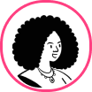

Conheça nossos cursos

Investimento para iniciantes
Aprenda como começar a investir com segurança para garantir rentabilidade como investidor iniciante.
começar agora
Poupando e Rendendo
Método desenhado por especialista em finanças do banco BTG Pactual ajuda pessoas a conseguirem guardar dinheiro.
começar agora
Independencia Financeira
Ótimo curso para quem quer começar a se planejar financeiramente e ingressar no mundo do investimentos.
começar agoraO que falam sobre nós
”Fiz o curso de investimento na escola DinDin e aprendi a gerir meu dinheiro com mais segurança. Agora, estou colhendo os frutos.”Wally, 25

”O curso de independência financeira na escola DinDin foi um divisor de águas em minha vida! Aprendi a controlar minhas finanças.”Whoopi Goldberg, 37
”Fiz um curso incrível na DinDin que mudou minha visão sobre rendimento. Aprendi muito e já começo a ver os resultados!”Jaden Smith, 23
”Meu trabalho como produtor exige muito de mim, mas o curso da DinDin me deu as ferramentas para otimizar meu rendimento.”Janes Joplin, 29